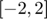
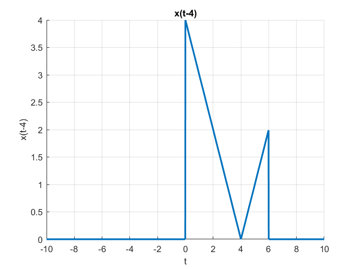
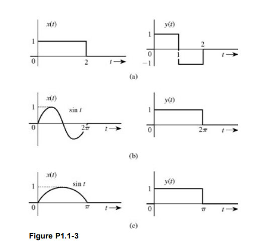
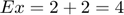
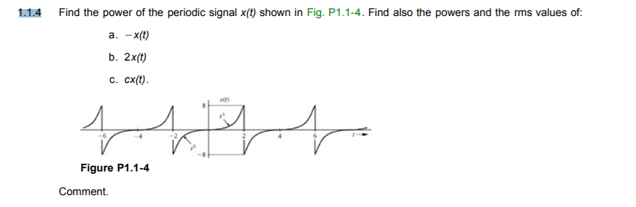

Practica 3 Señales en Tiempo Continuo
Grupo: 2TV2
Materia: Señales y Sistemas
Alumnos:
Maestro: Dr. Rafael Martínez Martínez
Contents
Introduccion
MATLAB
MATLAB es un entorno de cálculo técnico de altas prestaciones que integra análisis numérico, cálculo matricial, procesamiento de señales y gráficos. El nombre MATLAB proviene de “MATrix LABoratory'' (Laboratorio de Matrices). MATLAB fue escrito originalmente para proporcionar un acceso sencillo al software matricial desarrollado por los proyectos LINPACK y EISPACK, que juntos representan lo más avanzado en programas de cálculo matricial. MATLAB es un sistema interactivo cuyo elemento básico de datos es una matriz que no requiere dimensionamiento. Esto permite resolver muchos problemas numéricos en una fracción del tiempo del que llevaría hacerlo en lenguajes como C, BASIC o FORTRAN. MATLAB ha evolucionado en los últimos años a partir de la colaboración de muchos usuarios. En las universidades, se ha convertido en la herramienta de enseñanza estándar para cursos de introducción en álgebra lineal aplicada, así como cursos avanzados en otras áreas. En la industria, MATLAB se utiliza para investigación y para resolver problemas prácticos de ingeniería y matemáticas, con un gran énfasis en aplicaciones de control y procesamiento de señales.
Python
El creador del lenguaje es un europeo llamado Guido Van Rossum. Hace ya más de una década que diseño Python, ayudado y motivado por su experiencia en la creación de otro lenguaje llamado ABC. El objetivo de Guido era cubrir la necesidad de un lenguaje orientado a objetos de sencillo uso que sirviese para tratar diversas tareas dentro de la programación que habitualmente se hacía en Unix usando C. El desarrollo de Python duró varios años, durante los que trabajó en diversas compañías de Estados Unidos. En el 2000 ya disponía de un producto bastante completo y un equipo de desarrollo con el que se había asociado incluso en proyectos empresariales. Actualmente trabaja en Zope, una plataforma de gestión de contenidos y servidor de aplicaciones para el web, por supuesto, programada por completo en Python.
Python es un lenguaje de programación interpretado cuya filosofía hace hincapié en una sintaxis que favorezca un código legible. Se trata de un lenguaje de programación multiparadigma, ya que soporta orientación a objetos, programación imperativa y, en menor medida, programación funcional. Es un lenguaje interpretado, usa tipado dinámico y es multiplataforma. Es administrado por la Python Software Foundation. Posee una licencia de código abierto, denominada Python Software Foundation License?, que es compatible con la Licencia pública general de GNU a partir de la versión 2.1.1, e incompatible en ciertas versiones anteriores
Octave
Octave (o GNU Octave) es un asistente matemático libre de gran utilidad en el campo del cálculo numérico. Es un software de distribución completamente gratuita basado en la filosofía GNU. Provee una interfaz sencilla, orientada a la línea de comandos (consola. Octave nació alrededor del año 1988, y fue concebido originalmente para ser usado en un curso de diseño de reactores químicos para los alumnos de Ingeniería Química de la Universidad de Texas y la Universidad de Wisconsin-Madison. Octave posee una gran cantidad de herramientas que permiten resolver problemas de algebra lineal, cálculo de raíces de ecuaciones no lineales, integración de funciones ordinarias, manipulación de polinomios, integración de ecuaciones diferenciales ordinarias y ecuaciones diferenciales algebraicas. Emplear Octave como elección ante Matlab, significa en primer término, gozar de todas las libertades que el software libre ofrece. Cualquier persona con una computadora y conexión a internet, puede emplear Octave sin restricción alguna.
Octave tiene una gran cantidad de herramientas para resolver problemas de álgebra numérica comunes, encontrar las soluciones de ecuaciones no lineales, realizar integrales de funciones ordinarias, manipular polinomios, e integrar ecuaciones diferenciales ordinarias y ecuaciones diferenciales algebraicas. Es fácil de extender y modificar a través de funciones definidas por el usuario escritas en el porpio lenguaje de Octave, o utilizando módulos cargados dinámicamente escritos en otros lenguajes como C, C++, Fortran, etc. GNU Octave es un software de distribución libre. Puedes distribuir y/o modificar GNU Octave bajo las condiciones del contrato GNU General Public License (GPL) publicado por la Free Software Foundation.
Octave entra en la categoría de software libre y es un lenguaje de alto nivel diseñado originalmente para realizar cálculos numéricos en la computadora. Tiene una interfase de línea de comando para resolver problemas lineales y no lineales, y un lenguaje de programación similar a su contraparte comercial MATLAB, con el que es prácticamente compatible. Octave permite abordar problemas de las ciencias y la ingeniería. El manual de referencia más recomendable y difundido de Octave en Internet es el de su creador John W. Eaton (1997), y tanto allí como en los elaborados por García Rojo (2003) y Hamilton Castro (2004) pueden encontrarse mayores detalles.
LINKS DE CONSULTA
Matlab por la universidad nacional de Colombia
GNU OCTAVE MANUAL Por John W. Eaton, creador de Octave
Ejercicio1
1. Crea una función que se llame fun1 y reciba dos parametros y la función debe regresar la evaluación , esta función debe trabajar con y . Debe mostrar su código en el reporte (sin ejecutar).
function [f] = fun1(w,a)
if imag(a)~=0
disp('error')
else
f=a./(a.^2+w.^2)
end
end
Ejercicio 2
2. Construya una función que gráfique funciones de en el formato de su elección y pruebe su código mostrando la gráfica de vs en el intervalo  para , no debe incluir el código, solo el uso de la función para mostrar la gráfica
Ejercicio 3
3. Construya una función que gráfique funciones de en el formato de su elección y pruebe su código mostrando la gráfica de la transformada de Fourier en de la función , puede utilizar una función anonima para este fin, no debe incluir el código, solo el uso de la función para mostrarla gráfica. Reporte la gráfica de de (recuerde que ya tiene una función para esto). Reporte del espectro de magnitud y del espectro de fase en (puedes con sultar con help la descripción de abs, angle, atan2). Solo reporte las graficas.
Ejercicio 4
4.Realiza las mismas operaciones que Lathi en las secciones M1.1 a M1.4 que se encuentra al final del capítulo 1 y antes de la sección de problemas, cambie los inline por funciones anonimas
M1.1
close all; clear all; clc; t = -5:0.01:5; % Inline Function % f = inline('exp(-t).*cos(2*pi*t)','t'); % Anonymous Function f = @(t) exp(-t).*cos(2*pi*t); % Gráfica de la función anónima figure(1) plot(t, f(t), 'LineWidth', 2); title('M1.1: f(t) = exp(-t)*cos(2*pi*t)'); xlabel('t'); ylabel('f(t)'); grid on; % % M1.2 t = -5:0.01:5; % Inline Function % u = inline('(t>=0)','t') % Anonymous Function u(t) u = @(t) t >= 0; % Gráfica de u(t) figure(2); hold on; plot(t, u(t), 'LineWidth', 2); title('M1.2: Heaviside u(t)'); xlabel('t'); ylabel('u(t)'); grid on; % Anonymous Function p(t) p = @(t) u(t) - u(t-1); % Gráfica de p(t) figure(3); hold on; plot(t, p(t), 'LineWidth', 2); title('M1.2: p(t) = u(t) - u(t-1)'); xlabel('t'); ylabel('p(t)'); grid on; % %M1.3 % t = -5:0.01:5; % Definiciones u = @(t) t >= 0; f = @(t) exp(-t).*cos(2*pi*t); % Inline Function g(t) % g = inline('exp(-t).*cos(2*pi*t).*(t>=0)','t') % Anonymous Function g(t) g = @(t) f(t).*u(t); % Gráfica g(t) figure(4); hold on; plot(t, g(t), 'LineWidth', 2); title('M1.3: g(t) = f(t)*u(t)'); xlabel('t'); ylabel('g(t)'); grid on; % Gráfica g(2t+1) figure(5); hold on; plot(t, g(2*t+1), 'LineWidth', 2); title('M1.3: g(2t+1) = f(t)*u(t)'); xlabel('t'); ylabel('g(2t+1)'); grid on; % Gráfica g(-t+1) figure(6); hold on; plot(t, g(-1*t+1), 'LineWidth', 2); title('M1.3: g(-t+1) = f(t)*u(t)'); xlabel('t'); ylabel('g(-t+1)'); grid on; % Anonymous Function h(t) h = @(t) g(2*t+1) + g(-1*t+1); % Gráfica g(-t+1) figure(7); hold on; plot(t, h(t), 'LineWidth', 2); title('M1.3: h(t) = g(2t+1) + g(-t+1)'); xlabel('t'); ylabel('h(t)'); grid on;
%M1.4 % Definiciones u = @(t) t >= 0; x = @(t) exp(-t).*(u(t)-u(t-1)); x2 = @(t) exp(-2*t).*(u(t)-u(t-1)); % Energía de x(t) % El resultado tendrá un 0.1% de error relativo t = 0:0.001:1; % Integración numérica mediante aproximación rectangular (sum) E_x = sum(x(t).*x(t)*0.001); display(E_x); % Integración numérica mendiante cuadratura de Simpson (quad) % Se debe elevar al cuadrado la señal e indicar los límites de integración S_x = integral(x2,0,1); display(S_x); % Energía de g(t) t = 0:0.001:100; % Definiciones f = @(t) exp(-t).*cos(2*pi*t); f2 = @(t) exp(-2*t).*(cos(2*pi*t)).^2; g = @(t) f(t).*u(t); g2 = @(t) f2(t).*u(t); % Integración numérica mediante aproximación rectangular (sum) E_g = sum(g(t).*g(t)*0.001); display(E_g); % Integración numérica mendiante cuadratura de Simpson (quad) S_g = integral(g2,0,100); display(S_g); % Energía de h(t) t = -2:0.001:2; % Definiciones h = @(t) g(2*t+1) + g(-1*t+1); h2 = @(t) g2(2*t+1) + g2(-1*t+1); % Integración numérica mediante aproximación rectangular (sum) E_h = sum(h(t).*h(t)*0.001); display(E_h); % Integración numérica mendiante cuadratura de Simpson (quad) S_h = integral(h2,-1,1); display(S_h);
E_x =
0.4328
S_x =
0.4323
E_g =
0.2567
S_g =
0.2562
E_h =
0.3769
S_h =
0.3793
Ejercicio 5
5. Resuelve el problema 1.2.2 usando las herramientas del paso anterior.
t = -10:0.01:10; % Definiciones u = @(t) t >= 0; x = @(t) -t.*(u(t+4)-u(t))+t.*(u(t)-u(t-2)); % Gráfica de la señal x(t) figure(8); hold on; plot(t, x(t), 'LineWidth', 2); title('x(t) = -t(u(t+4)-u(t))+t(u(t)-u(t-2))'); xlabel('t'); ylabel('x(t)'); grid on; % a) x(t-4) figure(9); hold on; plot(t, x(t-4), 'LineWidth', 2); title('x(t-4)'); xlabel('t'); ylabel('x(t-4)'); grid on; % b) x(t/1.5) figure(10); hold on; plot(t, x(t./(1.5)), 'LineWidth', 2); title('x(t/1.5)'); xlabel('t'); ylabel('x(t/1.5)'); grid on; % c) x(-t) figure(11); hold on; plot(t, x(-t), 'LineWidth', 2); title('x(-t)'); xlabel('t'); ylabel('x(-t)'); grid on; % d) x(2t-4) figure(12); hold on; plot(t, x(2*t-4), 'LineWidth', 2); title('x(2t-4)'); xlabel('t'); ylabel('x(2t-4)'); grid on; % e) x(2-t) figure(13); hold on; plot(t, x(2-t), 'LineWidth', 2); title('x(2-t)'); xlabel('t'); ylabel('x(2-t)'); grid on;
Ejercicio 6
6.Escriba una función que se llame energia que reciba como argumento una función (anonima o simbolica) y que regrese el calculo de la energía, para esto puede resultar útil investigar las instrucciones int , integral Se presupone utilizar el código solo con funciones de energia. Muestre el código sin ejecutar, y posteriormente resuelva el problema 1.1.3
function [resultado]= energia(funevaluar) %la funcion energia recibe un argumento que es la funcion en terminos de t
limiteinferior=input('ingresa el limite de la integral ') %limite inferior
limitesuperior=input('ingresa el limite superior de la integral ') %limite superior
resultado=int(abs(funevaluar).^2,limiteinferior,limitesuperior); %realizamos el calculo
end
1.1.3
a. Find the energies of the pair of signals x(t) and y(t) depicted in Fig. P1.1-3a and P1.1-3b. Sketch and find the energies of signals x(t) + y(t) and x(t) ? y(t).

(a)

(b)
b. Repeat part (a) for the signal pair illustrated in Fig. P1.1-3c. Is your observation in part (a) still valid?
Ejercicio 7
7.Escriba una función que se llame potencia que reciba como argumento una función (anonima o simbolica) y que regrese el calculo de la potencia para esto puede resultar útil investigar las instrucciones int , integral Se presupone utilizar el código solo con funciones de potencia. Muestre el código sin ejecutar, y posteriormente resuelva el problema 1.1.4
function [resultado]=potencia(funb)%funcion que recibe una expresion en terminos de t limiteinferior=input('ingresa el limite inferior de la funcion ')%limite inferior -T0/2 limitesuperior=input('ingresa el limite superior de la funcion ')%limite superior T0/2 t0=abs(limiteinferior)+abs(limitesuperior)%calculamos el t0 apartir de los limites toomamos su valor absoluto para la suma resultado=(1/t0)*int(abs(funb).^2,(-t0/2),(t0/2));%calculo de la integral usando la formula de la potencia sin el limite end

Se sabe que el valor rms es la raiz cuadrada de la potencia
a)
b)
c)